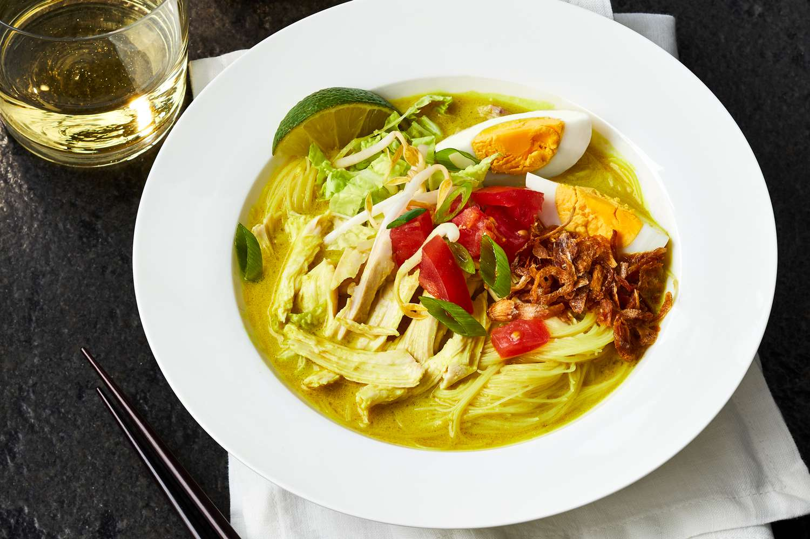

SOTO AYAM

INGREDIENTS
For the broth:
- 2 pounds bone-in chicken thighs
- 8 cups water
- 1 stalk lemongrass, bruised and tied into a knot
- 4 kaffir lime leaves, torn
- 2 bay leaves
- 1 cinnamon stick
- 3 cloves
- 3 cardamom pods
- 2 star anise
- 1 tsp salt
- 1/2 tsp black pepper
For the soup:
- 8 oz rice vermicelli noodles, cooked according to package instructions and drained
- 4 hard-boiled eggs, peeled and halved
- 2 cups bean sprouts, blanched
- 1/4 cup chopped scallions
- 1/4 cup chopped cilantro
- 1 lime, cut into wedges
- 1/4 cup fried shallots, for serving (optional)
For the spice paste:
- 6 shallots, peeled and roughly chopped
- 4 cloves garlic, peeled and roughly chopped
- 1 inch ginger, peeled and roughly chopped
- 1 inch galangal, peeled and roughly chopped
- 3 red chilies, seeded and roughly chopped
- 2 tsp ground coriander
- 1 tsp ground cumin
- 1 tsp turmeric powder
- 1 tsp salt
- 1/2 tsp black pepper
- 2 tbsp vegetable oil
INSTRUCTIONS
- In a large pot, combine the chicken thighs, water, lemongrass, kaffir lime leaves, bay leaves, cinnamon stick, cloves, cardamom pods, star anise, salt, and black pepper. Bring to a boil, then reduce the heat and simmer for 30-40 minutes, until the chicken is cooked through and tender.
- Remove the chicken from the broth and let it cool slightly. Shred the chicken meat and discard the bones and skin. Set aside.
- While the chicken is cooking, make the spice paste. In a blender or food processor, combine the shallots, garlic, ginger, galangal, red chilies, ground coriander, ground cumin, turmeric powder, salt, black pepper, and vegetable oil. Blend until smooth.
- In a skillet over medium heat, sauté the spice paste for 5-7 minutes, until fragrant and slightly browned.
- Add the sautéed spice paste to the chicken broth and simmer for another 10-15 minutes.
- To serve, divide the cooked rice vermicelli noodles, shredded chicken, and bean sprouts among four
bowls. Ladle the hot broth over the top. Garnish with hard-boiled egg halves, chopped scallions, cilantro, fried shallots (if using), and a lime wedge. Enjoy!
- You can also add other toppings like sliced cooked potatoes, shredded cabbage, or fried tofu to the soup
if you like.